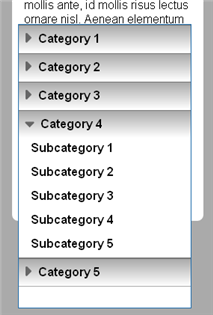
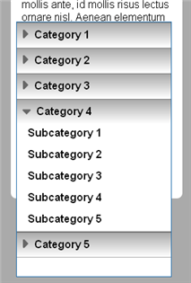

This section provides a short guide to handling various kinds of touch input: simple taps on the screen, drag gestures across the screen, and touches that use more than one finger. It shows how applications can specify their own touch functionality along with that built into the browser, and how to use touch events along with mouse events in hybrid mobile/desktop web apps. An illustrative sample application uses drag gestures to navigate within an image gallery, and multi-point touch to crop images.
Touch Events vs. Mouse Events
When you touch a mobile browser's screen, various DOM events fire. Mobile web apps can rely upon traditional mouse events, or they can use touch events. Touch events accommodate multi-point touch input, and tend to perform more responsively on mobile browsers than mouse events. The touchstart, touchend, and touchmove events can be substituted for mousedown, mouseup (or click), and mousemove events.
The DOM dispatches touch events prior to mouse events. Touch event handlers can prevent mouse events from firing:
element.addEventListener('touchstart', function touchHandler(event) { event.preventDefault(); // corresponding mouse event does not fire } );
When deploying touch events within hybrid desktop/mobile sites, adding preventDefault() to touch handlers effectively keeps mouse-triggered functionality separated from mobile browsers. When viewed on desktop browsers, touch events never fire, so touch handlers have no effect.
Note: If there is a need within a hybrid desktop/mobile application to determine a browser's support for touch events, use the method above to check which set of events actually fire. Object detection tests such as the following may be less reliable in cases when latent browser engine components are deployed in contexts where they are never used:
var maySupportTouch = document.createEvent("TouchEvent")
Since touch handsets lack a cursor, there are no touch equivalents for mouseover and mouseout events with which to implement rollover or hover effects in desktop interfaces. However, these two events actually fire along with mousedown and mouseup, which may lead to unexpected results on mobile browsers.
Tapping the Screen
Information about a touch point's coordinates is accessed via the event's touches array, rather than directly from the event. Simple taps that involve one finger are available as touches[0], the first element of that array. The following shows comparable functions for both touch and click events:
function touchHandler(event) {
event.preventDefault(); // disable mouse events & browser scrroll
event.stopPropagation(); // disable
var x = event.touches[0].screenX;
var y = event.touches[0].screenY;
}
function clickHandler(event) {
var x = event.screenX;
var y = event.screenY;
}
Responsive mobile interfaces often feature default background touch functionality along with more specific functionality for foreground elements. In that case, assign a default function to a full-screen ancestor element. Any foreground functions assigned to descendent elements that call event.stopPropagation() prevent the background function from executing:
<section class="backgroundLayer"> <nav class="foregroundElement"> </nav> </section> <script> document.querySelector('.backgroundLayer').addEventListener('touchstart', backgroundHandler); document.querySelector('.foregroundElement').addEventListener('touchstart', foregroundHandler); function backgroundHandler(e) { // default touch function executes } function foregroundHandler(e) { e.stopPropagation(); // default touch function does not execute } </script>
The following example shows an accordion-style navigation interface that relies on event.stopPropagation() to layer touch functions. It features a pervasive background function that collapses the interface down to a small icon. Only by tapping on specific foreground elements that expand the interface is this default function prevented from executing:
 
 

By setting the pointer-events CSS property to none, an application can selectively prevent touch or mouse events from firing on foreground elements, in which case only background functionality would execute. Setting it back to auto makes foreground elements intercept the event as usual, thus preventing background functions from executing if the associated handler calls stopPropagation().
Note: When users tap on a touch-activated element such as a link, mobile browsers customarily apply default visual highlighting. The all-purpose :active dynamic CSS class cannot reliably be used to re-style this visual feedback. The -webkit-tap-highlight-color CSS property can be used as an alternative, but only on Apple iPhone Safari.
When pressing and holding a link or image, mobile browsers customarily respond by presenting a contextual menu to copy or share the item. On Apple iPhone Safari, setting an element's -webkit-touch-callout CSS property to none selectively disables this feature. Otherwise, any time-thresholded functionality triggered by pressing and holding an element may interfere with this default browser feature.
Dragging a Finger
By default, dragging your finger across a touch-enabled mobile browser window scrolls within overflowing content. Applications that must respond to dragging gestures call preventDefault() to override this built-in browser feature. Calling preventDefault() from a touchstart event handler disables browser scrolling for the duration of the touch gesture. It can also be called from a touchmove handler:
element.addEventListener('touchstart', function touchHandler(event) { event.preventDefault(); // browser does not scroll content } );
Even for screen layouts that constrain the range of drag gestures, it is generally good practice to call preventDefault() to override the browser's default navigation.
If the viewport is configured to allow users to scale content, calling preventDefault() disables double-tap zoom gestures that magnify columns. However, two-finger pinch-zooming gestures cannot be selectively disabled; those can only be disabled for the entire viewport.
Note: An application in which browser scrolling is enabled may respond to the window's scroll event, but it responds more slowly than on desktop browsers. For relatively slow dragging gestures, the scroll event fires only after the finger has been lifted from the screen. Touch-based mobile browsers also feature kinetic scrolling. Rapid flicking gestures cause the page to keep scrolling and gradually come to a stop long after the finger has lifted from the screen. Unlike desktop browsers, the scroll event only fires on the window once the entire scroll has come to a stop.
Applications should set a threshold before responding to drag gestures, especially if they respond differently to simple tapping gestures. A slow drag gesture below that threshold might provide finely detailed functionality such as positioning screen elements. A faster touch gesture might provide higher-level interface options, such as navigating among screens.
In the following example, the touchmove handler sets the threshold as a distance of 48 pixels, short of which any slight drag gestures are ignored:
dragThreshold = 48; // number of pixels to recognize drag gesture function touchstartHandler(e) { e.preventDefault(); initialX = e.touches[0].pageX; } function touchmoveHandler(e) { e.preventDefault(); currentX = e.touches[0].pageX; deltaX = currentX - initialX; if (deltaX > dragThreshold) { navigatePrev(); } else if (deltaX < (dragThreshold * -1) ) { navigateNext(); } }
The following example uses thresholded drag gestures to navigate within an image gallery:


A simple animation results when users try to navigate outside the start or end of the gallery, useful feedback for any pervasive touch interface. To account for presentation on both desktop and mobile browsers, the example uses mouse event handlers along with touch handlers that call preventDefault() to specify a mobile-only application mode. It also presents different visual effects depending on whether the browser supports 3D transforms.
Note: The W3C's Touch API specifies touchenter and touchleave events for drag-and-drop interfaces, but they are not implemented. Likewise, the touchcancel event should respond when a handset imposes an interface during the course of a touch gesture, such as when receiving an incoming call, but the event remains unimplemented.
Touching with More Than One Finger
While each mouse event corresponds to a single point on the screen, touch events can track complex combinations and sequences involving several touch points. Various tools are available:
- The event.touches array lists all active touch points currently on the screen. The event.touches.length property yields the current number of fingers.
- When a touchstart event fires, the target of the first detected touch point (event.touches[0].target) is considered the target of the entire touch gesture. Touch points that fall within that target are available in the event.targetTouches array. (Unless stopPropagation() is called, touch events propagate upwards from different targets towards common elements in the DOM tree.)
- The event.changedTouches array lists all touch points that move over the course of the sequence. These changes are handled via the touchmove event, which also responds to the introduction of new touch points within a sequence. (At least one finger touches the screen for the duration of each touch event.)
Each distinct touch point features an identifier that help track the progression of complex finger sequences or movements.
The following shows simple ways to deal with potentially ambiguous touch input. These tests fail if more than two fingers touch the screen, or if the two fingers span different targets:
if ( event.touches.length > 2 ) return false; if ( event.targetTouches.length != event.touches.length ) return false;
The following shows the same image gallery example as above, but with an additional multi-point touch feature that allows users to crop images:


As before, a single-finger drag gesture navigates within the gallery. A two-finger tap gesture defines a region to crop, and subsequent two-finger taps resize the rectangle. When a crop selection is visible, tapping outside the rectangle dismisses it. Tapping inside the rectangle prompts users to crop the image. The rectangle is a nested element whose own touch handler calls stopPropagation to keep its functionality separate from that of the background.
Note: This example features an alternative mouse-event mode that responds to sequences of clicks on desktop browsers. See Canvas for details on how to crop images.
XXX MT
The Browser supports touch events, which serve as a more flexible and responsive alternative to various mouse and click events used for desktop browser interfaces.
This example captures touch input in two ways. Dragging a finger sideways navigates within an image gallery, presented with animated, 3D shapes. Tapping on the screen with two fingers presents a selection box that invites users to tap again to crop the image.
Use the touchstart, touchmove, and touchend events instead of mouse events. The sequence of the touch event starts when any finger touches the screen, and ends when all fingers are off the screen.
Calling preventDefault() from within touch handlers prevents the page from scrolling when users drag their fingers:
element.addEventListener('touchstart', function(e) { e.preventDefault(); // browser drag gestures are disabled... // ...and corresponding mouse event does not fire var x = event.touches[0].screenX; var y = event.touches[0].screenY; });
Calling preventDefault() also prevents corresponding mousedown, mouseup, and mousemove events from subsequently firing, allowing you to capture both kinds of input in hybrid mobile/desktop pages, without them interfering with each other. The gallery example above mixes both touch and mouse event handlers to implement a desktop mode, in which a sequence of two taps on the screen defines the image-crop region.
Since there may be more than one touch point on the screen at any one time, information such as screen coordinates is not available directly from the event, but from elements with the touches array. The first element of that array corresponds to the first detected touch point:
element.addEventListener('touchstart', function(e) { e.preventDefault(); e.stopPropagation(); // "background" elements do not respond to touch var x = event.touches[0].screenX; var y = event.touches[0].screenY; });
Like mouse events, applying stopPropagation() allows foreground elements to capture touch input and prevent default touch functionality assigned to background layers from executing. In this example, touching the crop box keeps the background page-dragging touch handlers from executing.
This example also implements a simple threshold for drag gestures, to prevent navigation within the gallery from becoming unpredictably sensitive:
var app = {}; app.threshold = 48; // number of pixels function touchstartHandler(e) { e.preventDefault(); app.initialX = e.touches[0].pageX; } function touchmoveHandler(e) { e.preventDefault(); app.currentX = e.touches[0].pageX; app.deltaX = app.currentX - app.initialX; if (app.deltaX > app.threshold) { app.navigatePrev(); } else if (app.deltaX < (app.threshold * -1) ) { app.navigateNext(); } }
The touchmove event also fires when additional fingers touch the screen. Various tools help you track input from more than one finger:
- The touches array features all current touch points. The first element touches[0] at touchstart is the first detected touch point, but it may lift before other fingers do.
- The changedTouches array allows touchmove handlers to tell which touch points have moved, or which have been added.
- Since touch points can fall anywhere on the screen, the targetTouches array lists all that fall within the element on which the event fired.
- Each touch point features an identifier that allows individual fingers to be tracked for the duration of complex touch gestures.
The gallery example above filters out three-finger touch input, along with ambiguous two-finger touches that straddle the currently displaying crop box:
if ( event.touches.length > 2 ) return false; if ( event.targetTouches.length != event.touches.length ) return false;